项目课程(4) 人物玉雕设计与制作
玉器的因料设计主要通过依势造型、俏色巧作、借裂藏裂、変瑕为瑜等琢磨手法来达到理想的造型效果，使玉形、人意、雕工达到自然的统一。本章的人物玉器琢磨同样要运用到因料设计的各种方法，设计琢磨出多姿多彩的人物形象。 学习目标： 1. 掌握人物玉器的因料设计方法 2. 了解佛仙仕女的造型特点 3. 熟悉玉人造型的审美要求 4. 知道形式美的造型规律 5. 掌握人物玉器的工艺过程 教学要求： 通过本章人物玉器工艺的实训课程，使学员能进一步理解和掌握因料设计的不同方法，用创新的意识设计不同的人物玉器；能掌握人物玉器的造型特点；能理解、运用形式美的规律；进一步提高琢玉技艺，能较熟练掌握玉器的圆雕、浮雕、透雕、线刻、等工艺技巧。 实践项目： 人物玉器设计和制作
一、人物玉器的因料设计 在人物玉器的设计案例中，同样有着因料设计，因材施艺的多种方法，我们通过下列人物玉器设计，重温了第三、四章的琢玉设计方法，同样的设计方法，可以琢磨出不同的题材和多样的造型。 1.依势造型 例1：图5-1-1珊瑚原料，一眼看去，珊瑚枝的造型具有动感，构思随想而出，粗枝主体部分雕琢扑蝶的仕女，一波三折的珊瑚巧作花枝横斜，整体造型随着珊瑚枝的形态而随形雕琢，人物动态自然优美，工艺细腻精湛（图5-1-2）。  图5-1-1 珊瑚原料 图5-1-1 珊瑚原料 图5-1-2 珊瑚 扑蝶 设计：郑一辉 制作：郑一辉 魏忠仁 图5-1-2 珊瑚 扑蝶 设计：郑一辉 制作：郑一辉 魏忠仁例2：图5-1-3籽玉原料，静观这枚籽玉，隐约可见玉女的倩影，依势地剥离，细心的雕琢，玉女脱石而出。简洁优雅的线形，构成了温润含蓄的玉体，飘动的衣纹，流淌的水波，全在一线之中带出。然而，籽玉皮质依然，玉女还是原石，造型在写实和抽象之中变化，构思融入了传统和现代的元素（图5-1-4）。  图5-1-3 籽玉原料 图5-1-3 籽玉原料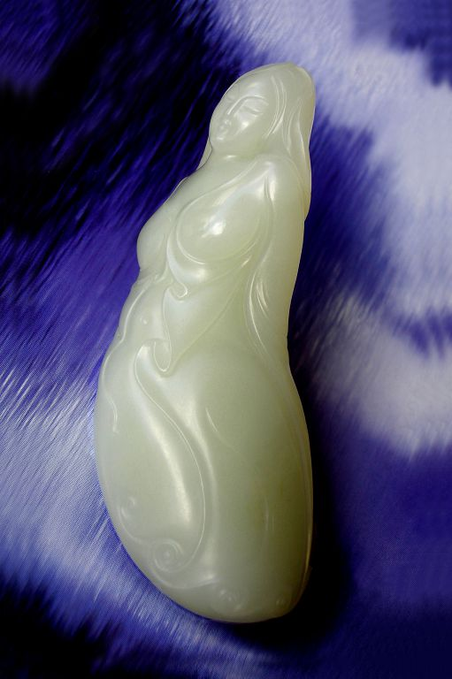图5-1-4 籽玉 芙蓉出水 赵丕成设计制作
以上两款人物造型，采用了同样的“依势造型”方法，然而由于玉料的不同，塑造了一静一动，一简一繁两款截然不同的造型风格。 2.俏色巧作 例 ① 图5-1-5，白玉的枣红皮色，在此得到了巧妙的利用：圆睁的双目，扩张的鼻孔，横飘的胡须，充分刻画出钟馗的无畏和霸气；飘逸的祥云中又有两只蝙蝠飞出，枣红皮色在白色的衬托下生动的表现出钟馗纳福的意韵。 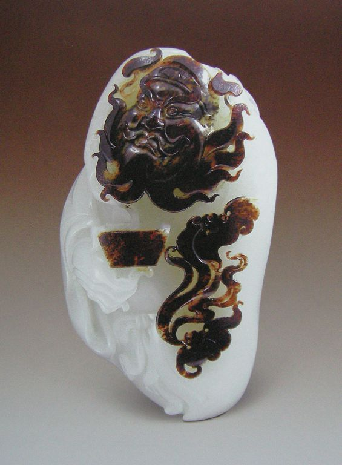图5-1-5 白玉 钟馗纳福 （神工奖银奖）林强设计制作
例 ② 图5-1-6，冰清的弯月，南飞的大雁，远去的帆影，飘落的红叶，还有远山烟云飘绕，又有一只白色的小鸟飞来，似乎聆听着琵琶女弄弦诉情，巧色运用深化了玉作琵琶行的意境，巧色雕琢成了情感的表达、凝固的诗情。  图5-1-6 玛瑙 琵琶行 赵丕成设计制作 图5-1-6 玛瑙 琵琶行 赵丕成设计制作俏色在玉雕中有很好的表现力，玉料中的巧色有的在表面、有的在深层，不同的玉料俏色的分布是千变万化的，俏色巧作贵在巧妙利用、随机把握。 3.借裂藏裂 图5-1-7籽玉原料，原来的玉料有着较多的裂痕，如头部、肩部、腿部都有深浅不一的裂痕，通过设计和制作，琢去裂痕，深藏裂痕，人物的造型随着裂痕而琢出（图5-1-8）。  图5-1-7 籽玉原料 图5-1-7 籽玉原料 图5-1-8 籽玉 浴日 赵丕成设计制作 图5-1-8 籽玉 浴日 赵丕成设计制作还有 （图5-1-9白玉原料），三处有深深的“伤痕”，通过巧妙的琢磨，倩影显出。裂痕是琢玉之中的常见病，琢磨就是通过一定的造型把裂痕去净或深藏，达到美玉无瑕的理想效果（图5-1-10）。  图5-1-9 白玉原料 图5-1-9 白玉原料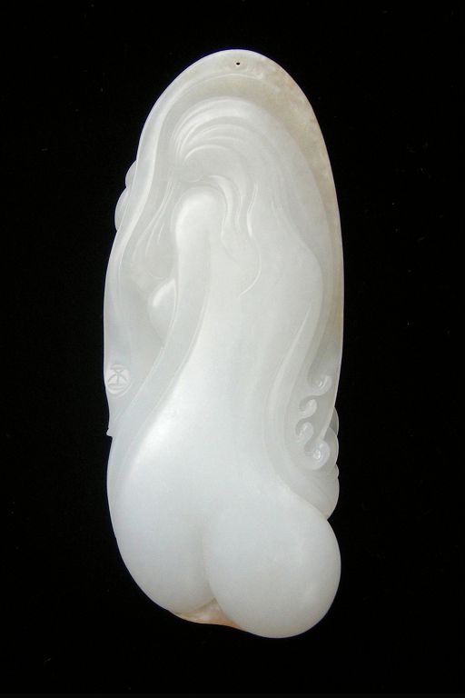图5-1-10 白玉 背影 赵丕成设计制作
4.変瑕为瑜 由于材料的不同和瑕疵的多变，変瑕为瑜的琢玉手法也随之多样，如：琢玉艺术家潘秉衡先生在雕琢一件玉器人物时，当出坯到仕女头部时，脸的一侧出现了深色纹理，洁净的脸面有了“脏色”。于是他在仕女脸的一侧构想、雕琢了一面扇子，“脏色”成了扇面上的纹饰，刻画了仕女执扇半遮面的神态。这一“变瑕为瑜”手法不仅解决了琢玉中的不利因素，而且形象生动地表现了古代女性恬静和含蓄之美。 玉器的因料设计方法是多样的，以上是玉器设计中比较典型的例子，这些方法有时又是混合在一起的，因此，设计要统筹兼顾，因此，玉器琢磨形成了随形构思，随色赋意，因裂而雕，为瑜而琢的施艺方法。但是，这一方法的完美体现还要依靠相应的造型能力和审美能力，玉器才有完美的造型、温润的质感和美好的意蕴。 二、佛仙仕女的造型特点 1.玉观音 佛教玉器主要有释迦佛、弥勒佛、观音菩萨、罗汉等，其中观世音菩萨是人们虽为熟悉的、亲切地、完美的造像。有东方维纳斯的美誉。她眼睛微闭，静观自在，在慈祥的微笑中还带有一丝神秘之感，体现了佛教慈祥的教义和佛法无边的渗透力。 玉观音的造型特点：脸相丰满圆润，比佛略长些，长眉秀目（秀眉凤眼），体态丰腴秀美，服饰华丽庄严，头戴宝冠、腰束长裙、肩挂披帛，左臂自然下垂，手掂净水瓶，右臂向上弯依胸，持佛尘或莲花，除了身体比例适度以外，必须注意的是动态变化微妙，以略微扭动身躯和略斜头部，构成优美的外轮廓曲线，既含蓄端庄，又灵动优雅，显出衣裙飘拂，静态中有微动之势，犹如徐徐升騰的青烟（图5-2-1至图5-2-4）。 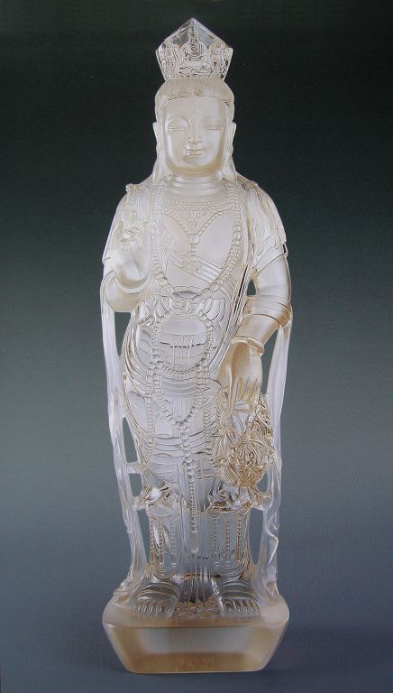图5-2-1 水晶 提蓝观音 作者：刘忠荣
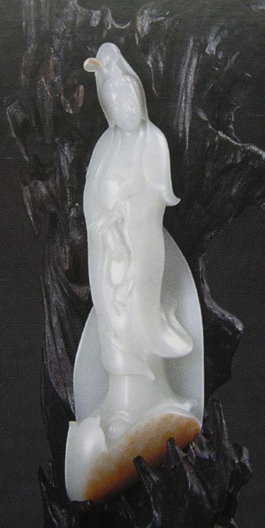图5-2-2 白玉 观音 作者：于泾
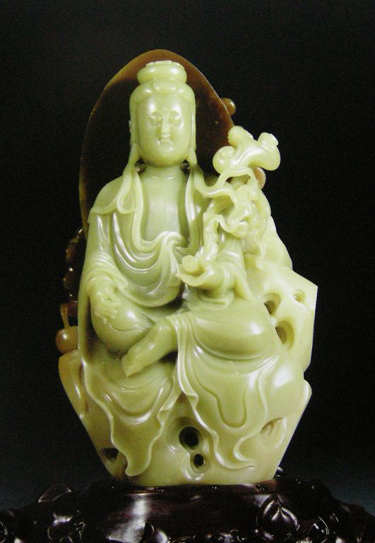图5-2-3 白玉 佛光如意观音 （天工奖优秀作品奖）作者：万伟
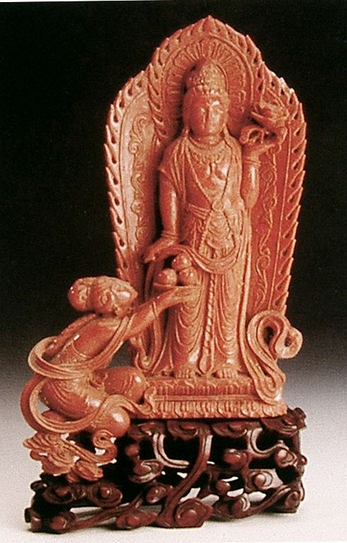图5-2-4 金星 观音菩萨 张雷设计制作
2.古代仕女 仕女整体造型要领： ① 体态神韵：恬静娴雅，婀娜多姿，略带娇美，有飘逸之感 ② 形体要点：颈项犹动略修长，秀骨圆润肩胛削，杨柳腰肢显灵动，臀部丰腴需含蓄。 ③ 面相造型：鹅蛋脸或称瓜子脸，柳叶眉、丹凤眼、悬胆鼻、樱桃嘴，眉毛弯弯，嘴角翘。 ④ 手部造型：仕女之手应作藕型，十指尖尖似春笋，刻画是要达到细、檽、柔、软。手势有：兰花形、佛手形、荷叶形、剑手形等。 ⑤ 衣纹造型：布衣纹要随着人物的形体起伏、结构动态而雕琢，贴身处，要有人体肌肤的弹性感；虚灵处，要有衣褶的飘逸感，使衣裳、风带走势飘动（图5-2-5、图5-2-6、图5-2-7）。  图5-2-5 清代 绿松石人物 图5-2-5 清代 绿松石人物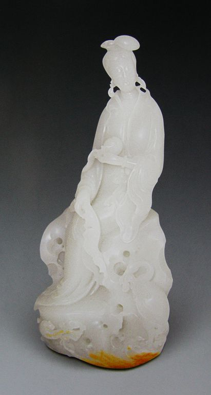图5-2-6 白玉 麻姑献寿（神工奖金奖）上海雅园艺术品有限公司设计制作
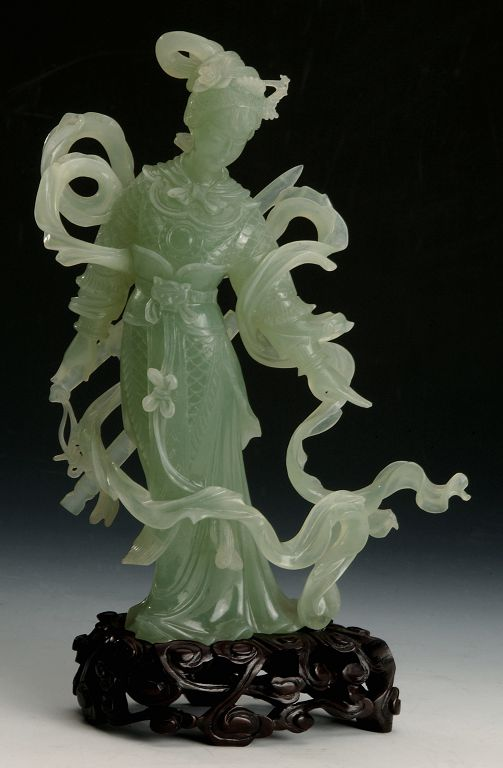图5-2-7 岫岩玉 英姿 赵丕成设计制作
3.现代玉女 现代玉女的造型一般比较整体，体态饱满，带有一定的抽象性，充分表现出形体的柔美和玉质的温润。在雕琢手法上细腻而不空灵，整体而有韵味，有的只是在原石的基础上简练的雕琢出简练、流畅的衣纹，然而，玉女优雅起伏的形体随之而出（图5-2-8）。 图5-2-8 白玉 女人与猫 作者：吴德昇
三、玉人造型的审美要求 1.人物需传神 物一般从头部开始琢磨，以此为标准渐渐推移至全身，头部要根据不同的人物性格定出五官位置，脸部特征。在不大的体积中要具体刻画出人物的神态表情，如慈祥、可爱、俊俏、英武、洒脱等，因此，采用简练概括、适当夸张的雕刻手法，使人物形似传神。女性脸型光洁、细腻、圆润，男性脸型适当留有小的块面、刀迹，刻画出阳刚之气。 身体部分依次刻画出人物的颈项、肩臂、胸背、臀位以及肌肉、结构等。尤其是手势的雕琢一定要仔细到位，符合人物的性格特征。手势的表情仅次于脸的表情，其为传递人物的神态起着重要的作用。 2.局部需整合 在人物玉器的雕琢过程中，要有局部雕刻和整体观察的意识，把握好局部和局部之间的关联，具体形象和整体作品之间的关联，正面和则面以及背面的关系，一一多要考虑周全，因为琢磨使每一个个体形态多在相应地缩小、变薄、变细，特别是镂空雕，形象之间往往容易造成脱节，因此作为初学者要以此为戒，形态安排要紧凑合理，使形象之间的交搭贴切、自然、生动。 3.衣纹添神韵 玉器人物的造型在很大的程度上在勾画和表现衣纹，衣纹的雕饰既要有程式化的表现，又要有个性化的思考，琢磨出衣纹的虚实关系，人体的结构关系。实处衣着贴身，随人物的结构起伏圆转；虚处衣褶虚灵飘逸，表现出衣纹的静动、聚散的丰富变化。 在人物衣纹的雕琢中要表现出不同的质感，薄质衣纹紧贴肌肤，表现出人体曲线之美，同时衣纹有飘逸灵动、轻盈柔和之感；厚质衣褶琢磨浑厚圆润，饱满豪放，给人物形象增添了沉稳劲健的风格。衣纹千变万化、丰富多彩，精湛、贴切的衣纹表现直接提升着人物形象的神韵。 4.运砣显刀法 精雕细刻作为琢磨的后道工序，是仔细入微，体现质感，展现琢玉刀法之美的工序。人物的脸部，琢磨运砣刀迹细致明快、干净利索、形态清晰；玉体光素之处琢磨圆润饱满、简洁流畅、细腻糥滑；衣纹的运砣走势可直推、后拉、有时也可横斜运行，充分表现出砣痕刀迹的各种韵味。在精雕细琢中，运砣要力度得当，既要掌握好行砣的推力又要控制住好止刀的收力，运砣进退自如，不能滑刀，以防伤及临近形体。运砣可在实践中细细体会，这是琢玉的特殊表现语言。 玉器人物的造型美感包含着多项的审美要求，主要有人物形体的美感，个性神态的生动，整体局部的和谐，衣纹质感的表现，精美雕琢的技巧等，在人物雕琢中整体的把握着这些造型的要求，使人物玉器具有造型美、雕琢美和意蕴美（图5-3-1至图5-3-14）。 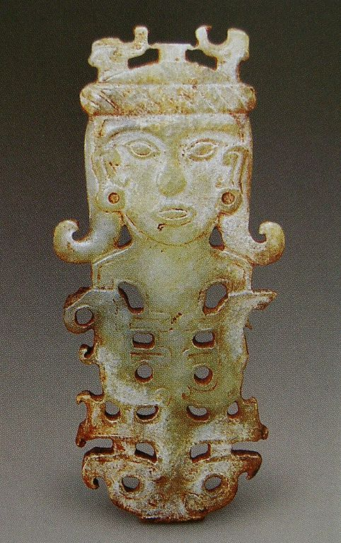图5-3-1 石家河文化 玉人兽复合式佩
 图5-3-2 战国晚期 双舞人佩 图5-3-2 战国晚期 双舞人佩 图5-3-3 西汉早期 舞人玉佩 图5-3-3 西汉早期 舞人玉佩 图5-3-4 清代 珊瑚 仕女 图5-3-4 清代 珊瑚 仕女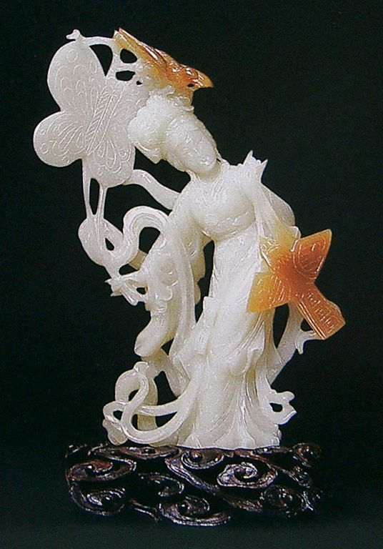图5-3-5 近代 糖白玉俏色放风筝仕女
 图5-3-6 岫岩玉 桔颂 赵丕成设计制作 图5-3-6 岫岩玉 桔颂 赵丕成设计制作 图5-3-7 碧玉 钟馗夜行 作者：吴德昇 图5-3-7 碧玉 钟馗夜行 作者：吴德昇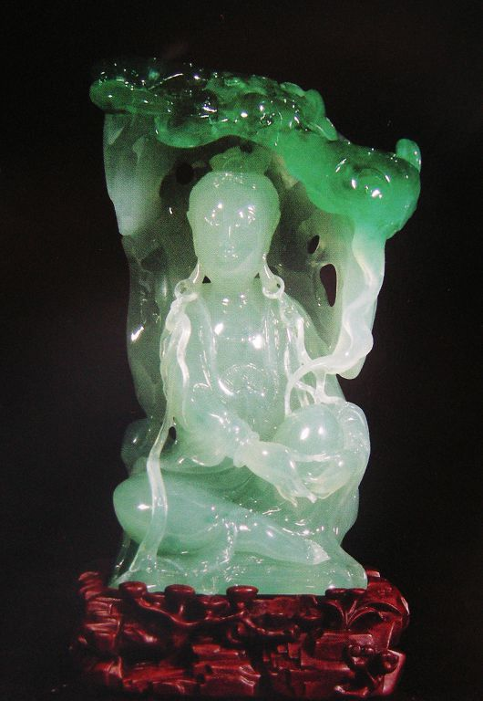图5-3-8 翡翠 如意自在观音（天工奖银奖） 作者：颜桂明
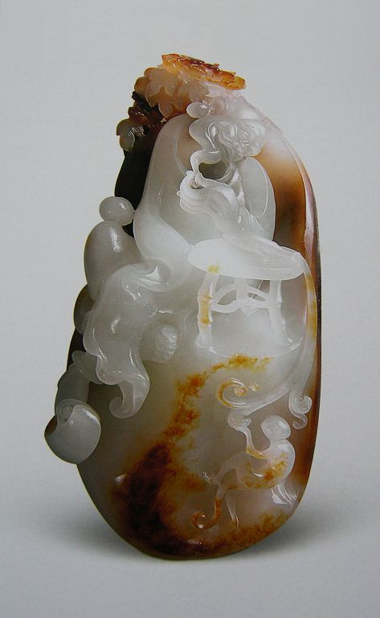图5-3-9 白玉 富贵当头（神工奖银奖） 崔磊设计制作
 图5-3-10 白玉 财神（神工奖金奖） 于雪涛设计制作 图5-3-10 白玉 财神（神工奖金奖） 于雪涛设计制作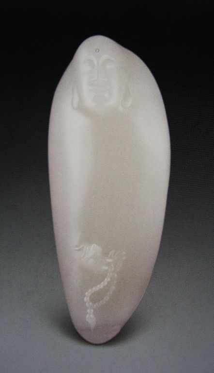图5-3-11 白玉 静思（神工奖金奖） 杨曦设计制作
 图5-3-12 玛瑙 醉罗汉 王敏设计制作 图5-3-12 玛瑙 醉罗汉 王敏设计制作 图5-3-13 白玉 童子如意 张景天设计制作 图5-3-13 白玉 童子如意 张景天设计制作 图5-3-14 和田黄玉 弥勒 侯晓锋设计制作 图5-3-14 和田黄玉 弥勒 侯晓锋设计制作四、形式美的造型规律 随着人物玉器设计过程的深入，在造型上要考虑人物的神态、衣纹的动感、合适的配景等问题，其间有形式美的规律需要安排和经营，使人物造型达到气韵生动的效果。 1.构图与章法 整体的构图与章法是构成玉器总的大气韵、大趋势、大效果以及姿态和表情。其在玉器设计中是非常讲究的，它以精炼的语言、饱满的气韵来表达美的形式，主要表现有以下几个方面。 ① 经营位置 指的是图中形象的大小、主次、远近、上下、左右等位置的摆放。要精心推敲、统筹规划、合理布局。 ② 呼应意连 图形中每一个具体形象都不是孤立的，它和其它形象以及整个构图都有着密切的联系。因此无论人物还是动物、植物等，它们的动作、姿态都要形成互相呼应的关系，融会一体。 ③ 虚实处理 虚和实是造型艺术中两大精神元素，它们相互依存、相互衬托。在中国的造型艺术上虚和实的处理尤为重要。玉器上的“虚”表现为虚空、凹陷，也表现为不加雕琢，素面一片，它是“实”的依托，更是“实”之灵气的往来之地。而玉器上的“实”则表现为凸起的充实形体，我们在雕琢实体时，虚体也油然而生。因此，塑造实体也就是在塑造虚体，虚体的形式同实体的形式一样重要。虚实相宜的安排形成玉器造型的一藏一露、一疏一密、一静一动的形式美感。 ④ 节奏韵律 节奏和韵律实际上是一种对比美统一于和谐美的旋律之中，在对比的重复和交替的元素中求得连贯的、匀称的美。节奏和韵律在诗歌、音乐、绘画、雕刻等方面是共同的美感语言和审美经验。它在玉器上表现为形体、线条的对比与统一，虚实、方圆、曲直、粗细、刚柔、静动之线形，经过周密的安排，使玉器造型产生节奏感和韵律感。使玉人的身影舒卷自如，形态轻盈优美，在有节奏的高低起伏中，形成柔和、流畅的韵律美。 ⑤ 气韵生动 气韵生动是中国绘画艺术所追求的最高目标，也是玉器艺术所要达到的境界。气韵在玉器作品中是可以体悟的，但又是难言的。首先能展现气韵的图形必定不是自然的，而超脱于自然形象之外，从“形似”进入到“神似”的境界，表现了自然生命的内在气质和精神风貌。有了气韵”，形象就被赋予生机勃勃的动感，画面就充满无限的生气。战国、汉代玉礼器的舞动感，明清山子玉的流动感，无不显出生命气息的灵动。这些“气韵”通过我们的视感、手感都能实在的体悟到，从而在心灵上产生共鸣（图5-4-1）。 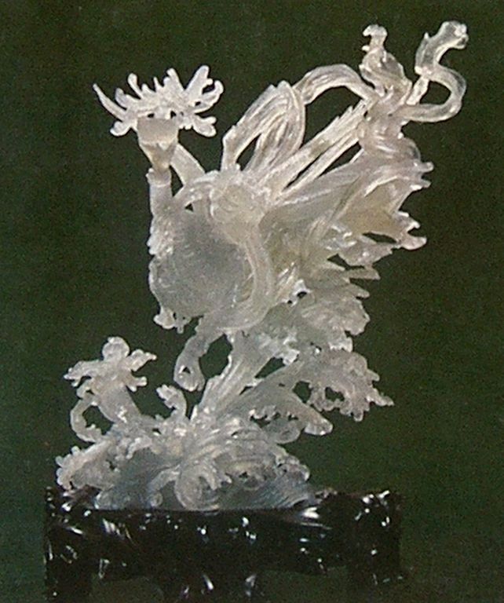图5-4-1 岫岩玉 精卫填海 设计：肖海春 制作：郝金才 李珠宝
2.形美和线美 形体美：有静态美和灵动美，如玉器的静态美不等于呆滞，而应通过一定的形体塑造，使对称和均衡的造型具备气势、充满张力，在安静而流畅的形体中蕴含着一股生气，有似静欲动之态。而灵动之美往往采用均衡的方式，如：人物强调外轮廓线的圆浑柔和，连绵不断，飘逸优雅的姿态，造型多见于饱满的、流动的、一波三折的有机形态。 “美的形体就是圆周率式的布局。在美的形体里，一切都是富有弹性的和饱满的，在这种形体里，细节是不会损害总体面貌的”。安格尔这一论点正符合玉器形体美的特点，丰富、圆润的细部有规律的交织、编排、凝聚，有机的组合成丰满的整体。大趋势的饱满，加上小姿态的圆润，以这样的造型理念足以琢磨任何壮美或柔美的形体。 线条美：线条是玉器的灵魂。玉器雕琢把自然的复杂线条单纯化、几何化，并使其圆中带方、方中有圆，在总体整合的前提下，让上下左右的线条舒适自如地开合、延伸、迂回，从中展现直线的挺拔、曲形的灵动、流线的优雅、弧形的张力。无论是怎样形态的线条，勾画时在视觉上都要力求舒适感，使线的走势具有一定的规律性。繁杂的、无规律的、追求细节多变的线条，往往会给视觉造成疲劳。因此，玉器的线条是非常讲究的，应在有限的空间中、平面上，让简洁的线条中透露出形象和意味（图5-4-2）。 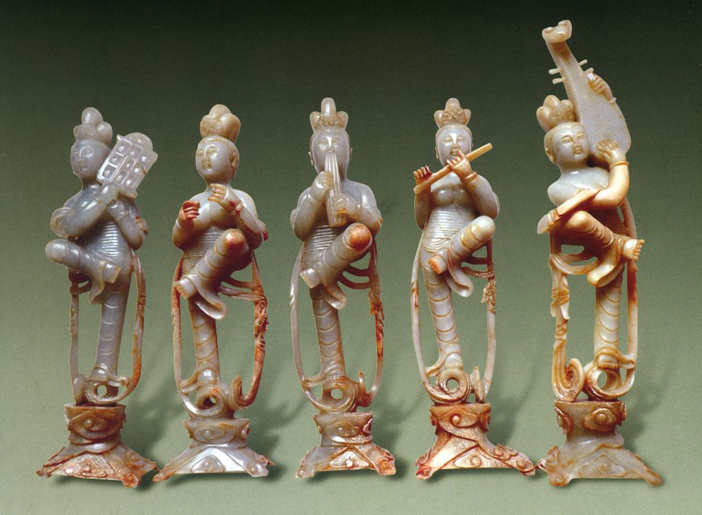图5-4-2 唐代 伎乐飞天
3.取舍和概括 玉器是以线的形式精炼地描绘物象，从繁杂的自然现象中去整理出秩序和规律，形成美的线形。 玉器形象是经过提炼概括的，即去繁求简，取其主要的形象，舍弃次要的部分。这一简不是简单、减少，而应该是“简当成型，简当得宜，简当愈精”（石鲁语）。因此，其中有作者对自然事物的主次筛选、合理组织、虚实经营、统筹安排等，这样才能雕琢出精练而富有情趣的玉器形式。因为玉器由于它的材质特性和有限的体积空间，雕琢不能过繁，砣痕不能太多，必须用少而精的语言恰当而生动地刻画形象，其方法大多取之于白描的取舍和概括描绘手法（图5-4-3）。  图5-4-3 西汉 祭祀玉人 图5-4-3 西汉 祭祀玉人4.借鉴和创新 玉器艺术有其自身特点，然而它的发展和完善却不是孤立的。它不断地吸收、借鉴姐妹艺术的表现手法，将不同艺术种类的特色化作自己的特殊语言，寻求自身的“有意味的形式”。 由此，玉器琢磨不仅仅依靠娴熟的工艺技巧，更有赖于治玉者的设计、创意，其中包括作者独具匠心的创意，和对吉祥图案的运用，以及丰富的联想和姐妹艺术的借鉴。从玉器的琢磨特点来看，无论从玉料的个体特征还是从观赏者的审美心理来看，都要求玉器设计以一个新的角度、新的面貌、新的姿态，去打动观者猎奇的审美心理。“凡是新的不平常的东西都能在想象中引起一种乐趣，因为这种东西使心灵感到一种愉快的惊奇，满足它的好奇心，使它得到它原来不曾有过的一种观念”。（图5-4-4至图5-4-10）。 图5-4-4 岫岩玉 蚌仙 徐勤设计制作
图5-4-5 岫岩玉 出击 王敏设计制作
 图5-4-6 岫岩玉 春燕 赵丕成设计制作 图5-4-6 岫岩玉 春燕 赵丕成设计制作 图5-4-7 金星 人欢鱼跃 王惠民设计制作 图5-4-7 金星 人欢鱼跃 王惠民设计制作图5-4-8 黑白玉 女人和鸽子（神工奖银奖）杨曦设计制作
图5-4-9 红玉 玉女 张敏设计制作
图5-4-10 墨玉 黑之俏 赵丕成设计制作
五、人物玉器的工艺过程 1.捏泥稿 捏泥稿是将构思意象或草图立体化、具象化，一般应用于圆雕之中，这对于初学玉雕者尤为重要，因为用泥来塑造形象是采用加和减的方式，便于把握形象的各个立体三维空间的关系和它的正确性、完整性，作为圆雕的泥稿要从不同的角度去观察形体构图的理想效果，这样琢磨玉器就有一个立体的正确的依据。 泥稿塑造应该注意两个问题：其一，在捏泥稿时无论是有无玉料依据，在形体的塑造上应该考虑玉质的特点，由于玉料块状的，因此在形体及构图的处理上要整体，不能太空灵。其二，泥稿不一定要面面俱到，有重点刻画和大体处理，如人物脸部或形体不易把握的地方要作仔细的雕塑，其它部分可作简练的形体转折、起伏塑造即可，这要根据作者雕刻的熟练程度而定。 2.画墨稿 画墨稿是根据泥稿的形态立体地画在玉料上，方法是先大体，后细部，整体入手。画墨稿不是一次完成的，是随着雕琢的深入而逐步完善。第一稿由于粗坯的雕琢墨线被雕去，然后再画墨稿……这样不断反复以至完成。 3.块体出坯 大体岀坯之前先仔细观察所要雕琢的玉料和泥稿，把形象的体块大小、前后层次、比例关系、重心位置等看透、认准，做到胸有成竹。先用斩砣去掉废料，然后根据人物的形体大体岀坯，落刀要求正确并留有余地。 岀坯虽然是粗略的造型，但也是关键的造型，其作品形象的大体轮廓得到展现，其中的动势、姿态、主次、虚实也得到了肯定，作品已经有了总体造型和精神，因此在岀坯中要不断审视作品的三维关系，从中进行不断的调整。值得注意的是，出坯从无形至有形，从含糊到明确，在斩砣对玉料的深入中，呈现的形态往往体现出特有的美感，比原先的泥稿和画稿更为深动，作者要善于捕捉出坯中偶发性和潜在性的美的因素，把握住玉雕造型的节奏和神韵。 4.形体粗磨 斩砣岀坯后人物形体有明显的棱角块体，然后用不同的工具进行从前至后，由浅入深，从大的体块逐步进入到小的体块以至圆润的形体和线面，各形象的线体之间的关系渐渐得到肯定。使人物的头、胸部、臀部三位一体的姿态，整个形体的转折起伏、体位的角度变化，比例的合度协调，再有四肢的垂直或倾斜，灵动或静态给以合适的定位，并给陪衬物体以相应的线面处理。玉雕粗坯是由表及里，层层剥进的锐减方式琢磨形体的，因此，要给精雕细琢的深入留有一定的实体余地，正如民间行话所说：“留得肥能改小,唯愁脊薄难复肥，内距宜小不宜大，切记雕刻是减法”。 5.精雕细琢 细坯琢磨的顺序基本和粗坯相似，从主要的到次要的，从正面的到反面的。粗坯是大体的形态，而精雕细琢则是更具体的深入，使整个作品中形象在线、面、体关系上得到明确肯定，在具体的形态上得到了细致刻画，同时展示出不同的刀法和娴熟的技巧。在精雕细琢中所用的砣轮工具砂粒要细或者使用旧工具，这样雕琢比较细腻、光挺、润泽。 人物玉器的工艺过程是全面融会：玉器的琢磨特点；美的造型规律；人物的造型特点等的知识层面和技巧层面，因此，人物玉器的工艺过程是设计的深化和完善，它全面的把握着玉器的造型美感和技巧美感。
实训项目和思考练习： 1.设计、制作人物玉器1件。 2.临摹白描人物画。 3.欣赏、学习古代和现代人物玉器。 |